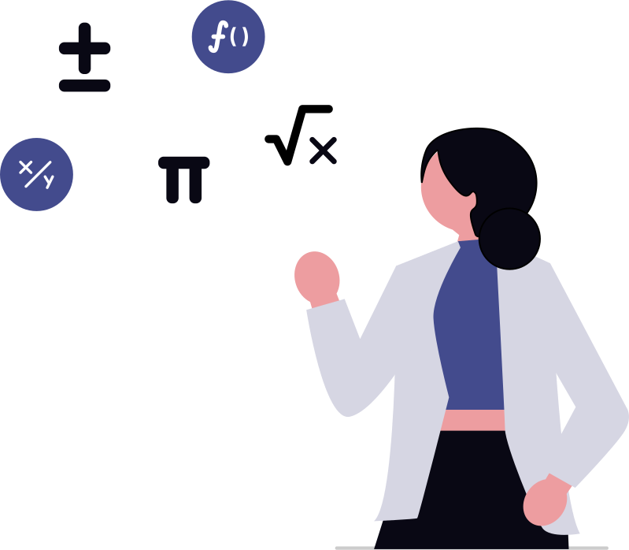
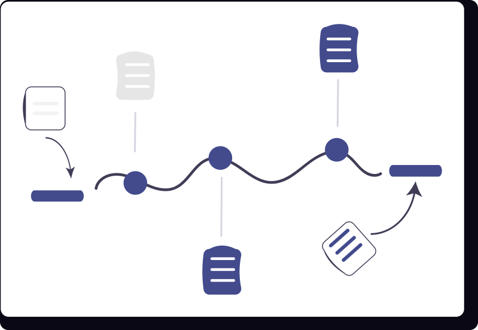
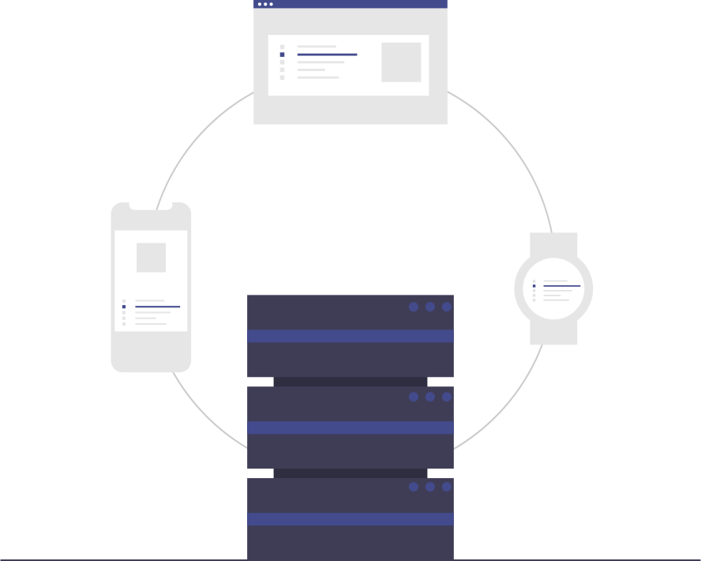
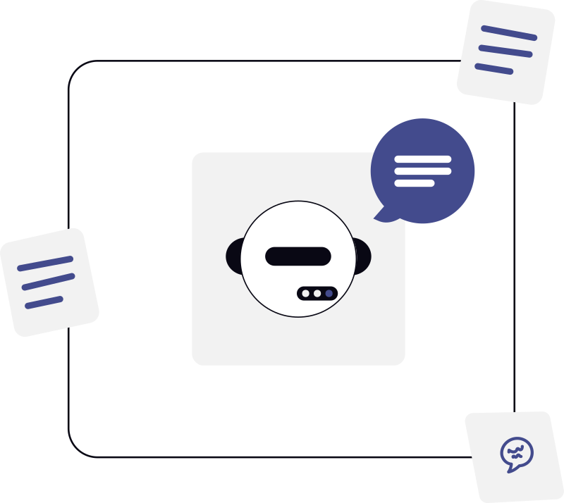

Breve historia de la IA
Un recorrido por los hitos más relevantes de la Inteligencia Artificial, década por década.
1950s - Primeras ideas y fundamentos
- 1950: Alan Turing publica Computing Machinery and Intelligence y propone el Test de Turing.
- 1951: Christopher Strachey desarrolla uno de los primeros programas de ajedrez.
- 1956: Conferencia de Dartmouth, considerada el nacimiento oficial de la IA como disciplina.

1960s - Primeros sistemas simbólicos

- 1961: Primer robot industrial, Unimate, entra en producción.
- 1966: Joseph Weizenbaum crea ELIZA, pionero en procesamiento de lenguaje natural.
- 1969: Minsky y Papert publican Perceptrons, influyendo en redes neuronales.
1970s - Sistemas expertos
- 1972: Se desarrolla MYCIN, sistema experto para diagnóstico médico.
- 1976: Surge PROLOG, lenguaje lógico usado en IA.
- 1979: El robot Stanford Cart logra navegar de manera autónoma.
1980s - Renacimiento con sistemas expertos y redes neuronales

- 1980: Expansión comercial de los sistemas expertos en empresas.
- 1986: Rumelhart, Hinton y Williams popularizan el algoritmo de backpropagation.
- 1987: Inicio del “invierno de la IA” por expectativas no cumplidas.
1990s - Avances prácticos y juegos

- 1997: Deep Blue de IBM vence a Garry Kasparov.
- 1998: Se lanza Furby, juguete interactivo con IA básica.
- 1999: Robots móviles comienzan a usarse en exploración y logística.
2000s - Big Data y Machine Learning

- 2002: Primer robot aspiradora Roomba llega al mercado.
- 2006: Geoffrey Hinton impulsa el término Deep Learning.
- 2009: Google desarrolla coches autónomos experimentales.
2010s - Deep Learning y revolución moderna
- 2011: IBM Watson gana en Jeopardy! contra campeones humanos.
- 2012: Red neuronal de Google reconoce gatos en YouTube sin supervisión.
- 2016: AlphaGo de DeepMind vence al campeón mundial de Go.
2020s - IA generativa y aplicaciones masivas
- 2020: Modelos de lenguaje como GPT-3 muestran capacidades sorprendentes de generación de texto.
- 2022: Difusión de IA generativa en imágenes (DALL·E, Stable Diffusion, MidJourney).
- 2023-2025: Expansión masiva de IA en educación, salud, arte y productividad.